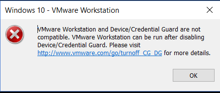

<h1>安装错误</h1>
<h2>VMware Workstation and Device/Credential Guard are not compatible. VMware Workstation can be run after disabling Device/Credential Guard.</h2>
<p></p>
<ol>
<li>关闭 Hyper-V
<code>win11</code> 使用虚拟机<code>VMware</code>是不需要的开启<code>Hyper-V</code>的，但是如果遇到了蓝屏错误，需要升级<code>VMware</code></li>
<li>以管理员身份打开命令提示符窗口
运行<code>bcdedit / enum {current}</code>
注意，如果需要恢复这种情况，请记下HyperVisorLaunchType
运行 <code>bcdedit / set hypervisorlaunchtype off</code> 以禁用管理程序在执行命令后关闭命令提示符并重新启动系统。</li>
</ol>
